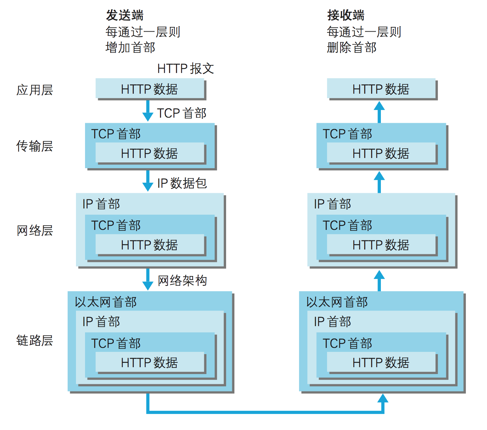

四层模型 & 七层模型

网络七层模型是一个标准，而非实现。(OSI:Open Systems Interconnection Model)
网络四层模型是一个实现的应用模型。
网络四层模型由七层模型简化合并而来。
TCP/IP 模型将 OSI 模型由七层简化为四层
TCP/IP 协议中每层技术举例：
网络访问层（数据链路层）：ARP、RARP
互联网层（网络层）：ICMP、IP
传输层：TCP、UDP
应用层：DNS、FTP、HTTP、SMTP、TELNET、IRC、WHOIS
原文链接：https://juejin.im/post/59a0472f5188251240632f92
HTTP

1）首先作为发送端的客户端在应用层 (HTTP 协议)发出一个想看某个 Web 页面的 HTTP 请求。
2）接着，为了传输方便，在传输层(TCP 协议)把从应用层处收到的 数据(HTTP 请求报文)进行分割，并在各个报文上打上标记序号及端 口号后转发给网络层。
3）在网络层(IP 协议)，增加作为通信目的地的 MAC 地址后转发给 链路层。这样一来，发往网络的通信请求就准备齐全了。
4）接收端的服务器在链路层接收到数据，按序往上层发送，一直到应用层。当传输到应用层，才能算真正接收到由客户端发送过来的 HTTP 请求。
参考：《图解HTTP》
HTTPS
HTTPS同时采用两种加密方式，首先通过非对称加密交换稍后要使用的对称加密的密钥；之后再使用对称加密进行正常通信（非对称加密性能较差）
Ps:对称加密和非对称加密（公钥加密，私钥解密。私钥加密，公钥解密）
此时并不能保证客户端获取到的公钥是值得信赖的，此时需要证书的帮忙
一次性工作：
1）服务端运营人员将自己的公钥提交到证书认证机构
2）认证机构判定申请者身份后，使用机构的私钥对服务端的公钥进行加密并颁发证书
正常请求流程：
1）双方先确定使用哪种加密算法以及密钥长度
2）服务端将(证书+服务端公钥)发送到客户端，客户端通过内置在浏览器内的机构公钥对证书进行解密，如果二者相等表示服务端公钥可信任
3）客户端将对称加密密钥通过服务端公钥加密发送到服务端
4）服务端使用私钥进行解密获知对称加密的密钥